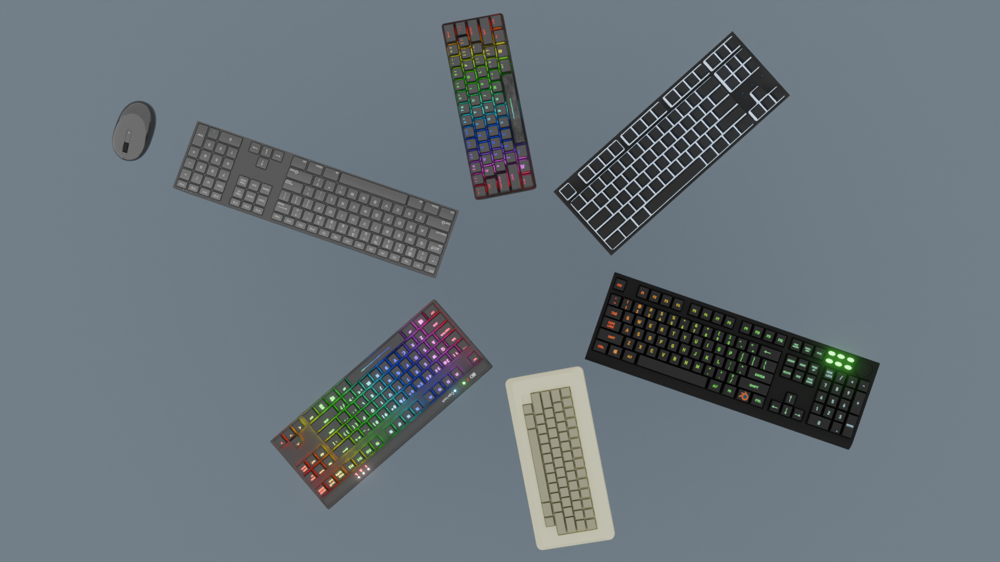
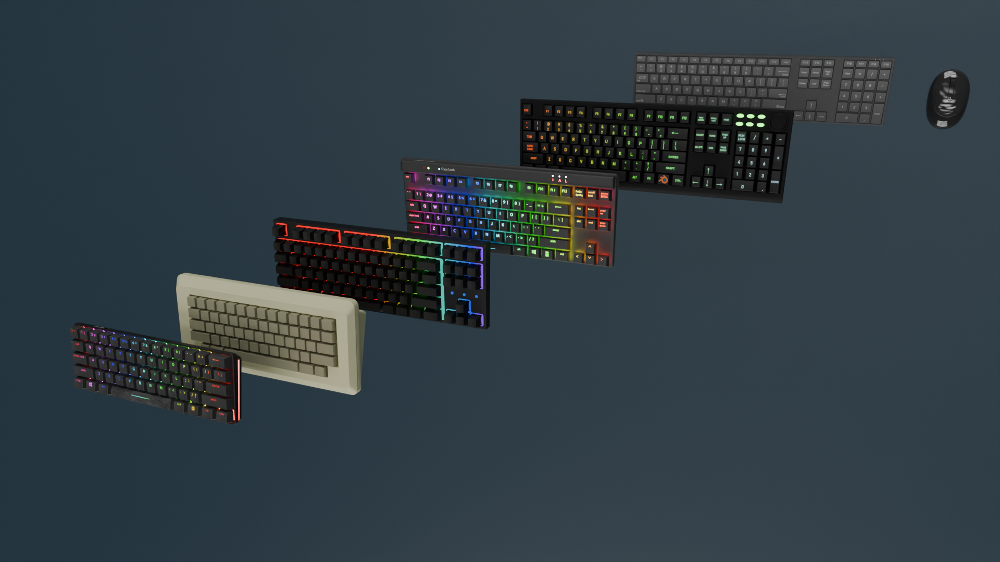

The keyboard is one of the most important parts of any setup. It’s the tool you interact with the most, whether you’re gaming, studying, coding, or simply spending hours at your computer. Because of that, the design of a keyboard matters far beyond just how it looks on a desk. In this lineup, each keyboard was created with a slightly different idea in mind: different styles, different atmospheres, and different types of users. Instead of offering a single design that tries to do everything, this collection focuses on variety. Some models lean toward gaming with stronger visual presence and RGB lighting, while others focus on a cleaner and more minimal appearance that fits into a work or productivity setup. The gaming-oriented keyboards in the lineup are designed to stand out visually while still remaining practical for everyday use. Their layouts emphasize the keys that gamers use most often, with clear spacing and a shape that keeps everything easy to reach. RGB lighting plays a major role in these models, not just as decoration but also as part of the overall atmosphere of a gaming setup. The lighting highlights the shape of the keys, reflects subtly off the keyboard surface, and adds a sense of motion when effects are enabled. In darker environments the keyboard becomes a visual centerpiece of the desk, especially when paired with other RGB components like a mouse or monitor backlighting.
Alongside the gaming-focused designs, the lineup also includes keyboards with a much more minimal and modern style. These models reduce visual noise and focus on clean lines, balanced proportions, and a neutral color palette. Instead of bright lighting or aggressive styling, the emphasis is on simplicity and clarity. This makes them a good fit for workspaces where the goal is to maintain a clean desk environment without unnecessary distractions. The surfaces, key shapes, and spacing are designed so the keyboard feels organized and structured when viewed from above, which helps it blend naturally with modern setups that use neutral colors like black, gray, and white. One of the more unique keyboards in the collection takes inspiration from vintage designs. Rather than following modern RGB trends, it uses warmer tones and a retro color palette that resembles classic computer hardware. The slightly softer colors and traditional key shapes give it a nostalgic character, while the layout and construction still follow modern standards. The result is a keyboard that visually feels older and familiar, but still fits comfortably in a modern setup. For users who like retro aesthetics or want something that stands apart from typical gaming keyboards, this model offers a different kind of personality.


Across the entire lineup, consistency in structure and usability is still important. The keyboards share a similar approach to layout, spacing, and proportions so that switching between models doesn’t feel unfamiliar. Key placement is arranged in a standard way that works for gaming, typing, and everyday computer use. Even though the visual styles differ from one model to another, the goal is that each keyboard feels comfortable to use and easy to understand at a glance. Nothing about the layout requires relearning how to type or navigate a keyboard. Another noticeable element across the collection is the attention given to how the keyboards fit into a full desk setup. A keyboard rarely exists alone; it sits alongside monitors, mice, desk lighting, and other accessories. Because of that, the designs were considered in the context of a full setup rather than as isolated objects. Some models are meant to visually anchor a gaming desk with stronger lighting and darker colors, while others are intended to complement minimal setups where the keyboard should feel integrated rather than dominant. The differences in style allow users to choose something that fits the atmosphere they want to create around their workspace.
The images and video on this page demonstrate how each keyboard appears from different angles and in different environments. Close-up shots highlight the key shapes, textures, and lighting effects, while wider views show how the keyboards fit into a complete setup. The goal is not only to show the keyboards as individual products but also to illustrate how they function as part of a desk environment. Whether placed in a gaming station, a minimal work desk, or a retro-inspired setup, each keyboard contributes its own visual identity while still maintaining practical usability. Rather than focusing on exaggerated marketing claims, this lineup aims to present keyboards as they actually are: tools designed for daily interaction, but also objects that shape the look and feel of a desk setup. Some emphasize lighting and energy, others emphasize clarity and simplicity, and one leans into a nostalgic aesthetic that recalls earlier generations of computer hardware. Together they form a small but varied collection, allowing users to choose the design that best matches the way they work, play, and organize their personal workspace.